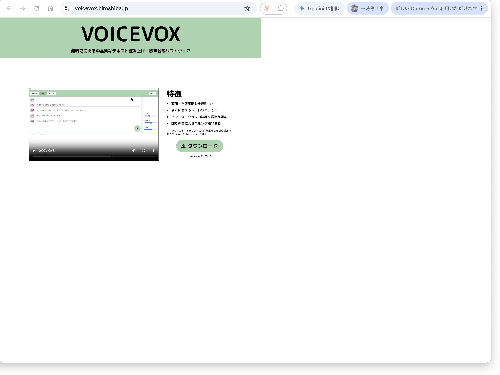
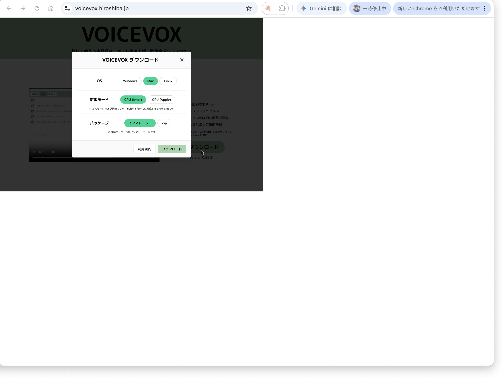
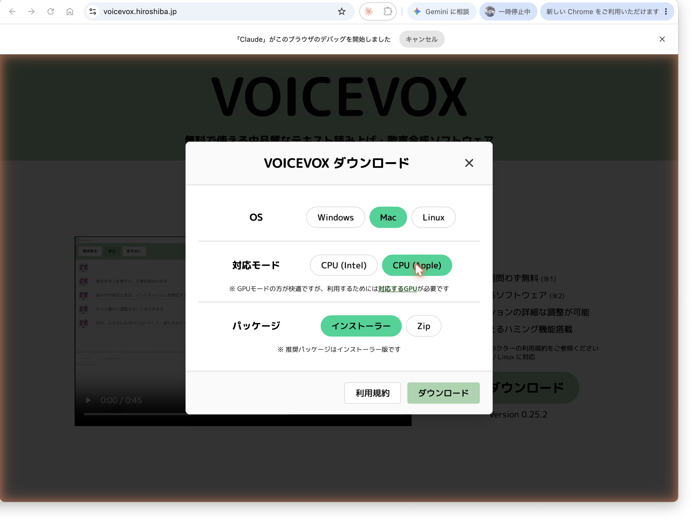

はじめる前に確認してください
- 対応OS： Mac（macOS）のみ
- インターネット接続： 初回セットアップ時のみ必要
- 所要時間： 初回セットアップ 約10〜15分（VOICEVOXのダウンロード含む）
1
ツールをダウンロードする
初回のみ
上の 「ツールをダウンロード（ZIP）」 ボタンをクリックするとZIPファイルがダウンロードされます。
ダウンロードが完了したら、ZIPファイルをダブルクリックして解凍してください。
解凍するとフォルダが作成されます。このフォルダは 消さずに「書類」フォルダなど分かりやすい場所に移動しておいてください。
フォルダの中身
解凍したフォルダの中に「setup.command」というファイルがあります。次のステップで使います。
2
セットアップを実行する
初回のみ・1回だけ
解凍したフォルダの中にある 「setup.command」 をダブルクリックしてください。
「開発元が未確認のため開けません」と表示された場合
右クリック（または Control+クリック）→「開く」→「開く」を選んでください。
黒い画面（ターミナル）が自動で開き、セットアップが始まります。
「セットアップ完了！」と表示されたら Enterキーを押して閉じてください。
セットアップが完了すると…
デスクトップに「VOICEVOX変換ツール.command」が自動で作成されます。これが毎日使う起動ボタンになります。
3
VOICEVOXアプリをインストールする
初回のみ・無料
音声変換には VOICEVOX（無料）が必要です。以下の手順でインストールしてください。
① VOICEVOXのサイトを開く
ブラウザで https://voicevox.hiroshiba.jp/ にアクセスし、「ダウンロード」ボタンをクリックします。

② ダウンロード設定を選ぶ
ダウンロードダイアログが表示されます。以下の通りに選択してください。
- OS： Mac（緑色になっていることを確認）
- パッケージ： インストーラー（推奨）
- 対応モード： 下の表で自分のMacに合う方を選ぶ
CPU (Intel)
2020年以前のMac
Intel製CPU搭載
Intel製CPU搭載
CPU (Apple)
2020年以降のMac
M1 / M2 / M3 / M4搭載
M1 / M2 / M3 / M4搭載
Intel Mac をお使いの方
「CPU (Intel)」を選択し（緑色に）、「インストーラー」を選び、「ダウンロード」をクリックします。

Apple Silicon Mac（M1/M2/M3/M4）をお使いの方
「CPU (Apple)」を選択し（緑色に）、「インストーラー」を選び、「ダウンロード」をクリックします。

どちらのMacか分からない場合
画面左上のAppleマーク（）→「このMacについて」をクリック。「チップ」に「Apple M1」などと書いてあれば CPU (Apple)、「Intel」と書いてあれば CPU (Intel) を選んでください。
③ インストールする
ダウンロードしたインストーラーをダブルクリックして、画面の指示に従いインストールしてください。
インストール完了後、VOICEVOXアプリを起動しておいてください。
4
毎日の使い方
2回目以降はここから
- VOICEVOXアプリを起動する（Finderのアプリケーションフォルダから）
- デスクトップの「VOICEVOX変換ツール.command」をダブルクリックする
- ブラウザが自動で開きます
ブラウザが開いたら…
| ステップ | 操作 |
|---|---|
| STEP 1 | 議事録テキストを貼り付けて「解析する」を押す |
| STEP 2 | 話者ごとにキャラクターを選ぶ |
| STEP 3 | 「変換してダウンロード」を押してMP3を保存する |
終了するときは
ブラウザのタブを閉じてから、黒い画面（ターミナル）を閉じてください。
トラブルシューティング
よくある問題と解決方法
「VOICEVOXに接続できません」と表示される
VOICEVOXアプリが起動していません。VOICEVOXを起動してから、ブラウザをリロード（再読み込み）してください。
ブラウザが開かない
デスクトップの「VOICEVOX変換ツール.command」をもう一度ダブルクリックしてください。それでも開かない場合は担当者に連絡してください。
「開発元が未確認のため開けません」と出る
右クリック（または Control+クリック）→「開く」→「開く」を選んでください。
setup.commandを実行したが「Python 3.10以上が必要」と出る
https://www.python.org/downloads/ からPythonをインストールしてから、もう一度 setup.command を実行してください。